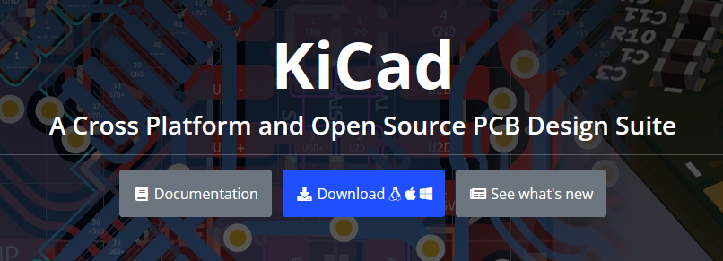
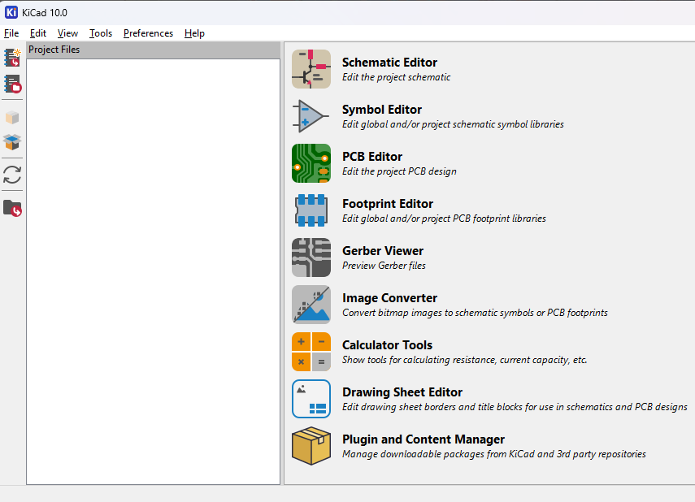

KiCad 10 installieren – Schritt für Schritt
KiCad 10 ist die aktuelle stabile Version (Stand September 2026). Hier führen wir dich durch die Installation auf allen drei Betriebssystemen – inklusive der ersten Startvorbereitung.
Schritt 1: Download
Gehe auf die offizielle Download-Seite https://www.kicad.org/download/ und wähle dein Betriebssystem. Nimm die stabile Version (10.0.x), nicht die Nightly-Builds – die sind nur für Tester gedacht.
Downloade KiCad ausschließlich von kicad.org. Inoffizielle Spiegelserver können veraltete oder veränderte Pakete enthalten.

Schritt 2: Windows (10/11)
- Lade den Windows-Installer (64-bit) als
.exeherunter. - Doppelklick auf die Datei – Windows fragt ggf. nach einer Freigabe (“Dieser App erlauben, Änderungen vorzunehmen”) → Ja.
- Der Installer öffnet sich. Wähle die Sprache (z. B. Deutsch) und akzeptiere die GPLv3-Lizenz – die du übrigens tatsächlich lesen kannst, weil sie keine versteckten Klauseln hat.
- Komponentenauswahl: Standardmäßig wird alles installiert, inklusive der offiziellen Bibliotheken und Support-Pakete für 3D-Modelle. Für Einsteiger: Standard lassen.
- Zielordner bestätigen (Standard:
C:\Program Files\KiCad\10.0), Install klicken, kurzer Warte-Vorgang, Finish.

Schritt 3: macOS
- Lade die
.dmg-Datei von kicad.org (Apple Silicon oder Intel, je nach Mac). - Doppelklick auf die
.dmg– das Fenster mit dem KiCad-Icon erscheint. - Ziehe das KiCad-Icon in den Programme-Ordner.
- Erster Start: macOS blockiert ggf. Apps “von einem nicht überprüften Entwickler” (KiCad wird ordnungsgemäß signiert – falls trotzdem eine Meldung kommt: Systemeinstellungen → Sicherheit → Trotzdem öffnen).
Schritt 4: Linux
Ubuntu / Debian (und Derivate)
Das offizielle KiCad-Team pflegt ein stabiles PPA:
sudo add-apt-repository ppa:kicad/kicad-10.0-releases
sudo apt update
sudo apt install kicadFedora
sudo dnf install kicadArch Linux
sudo pacman -S kicadSchritt 5: Erster Start – Projekt anlegen
- Starte KiCad (Windows: Startmenü; macOS: Programme; Linux:
kicad &). - Der Projektmanager begrüßt dich – ohne Login, ohne Aktivierung, direkt einsatzbereit.
- File → New Project, Name vergeben (z. B.
blinkende-led), Speicherort wählen. - Du hast jetzt Schaltplan (
.kicad_sch) und Board (.kicad_pcb) in einem Projekt – beide öffnest du direkt aus dem Projektmanager.

Da die englischen Begriffe in Tutorials und Foren üblich sind, ist es oft einfacher, die englische Oberfläche zu nutzen. Du kannst jederzeit unter Preferences → Set Language wechseln.
Schritt 6: Sprachpaket (optional)
Falls KiCad nicht auf Deutsch startet: Preferences → Set Language → German, anschließend KiCad neu starten. Die Übersetzungen kommen direkt mit dem Installer.
Troubleshooting
- Windows: Installer bricht ab → als Administrator ausführen.
- macOS: “App ist beschädigt” →
xattr -cr /Applications/kicad.appim Terminal ausführen (passiert selten beim offiziellen Download). - Linux: PPA-Fehler → Distribution prüfen; auf Debian ggf. das offizielle KiCad-Repository verwenden.
Nächste Schritte
Jetzt, wo KiCad läuft, kannst du direkt loslegen: Öffne die mitgelieferten Demoprojekte unter File → Open Demo Project – oder wirf einen Blick auf die offizielle Dokumentation: https://docs.kicad.org
Viel Erfolg beim ersten eigenen Board!